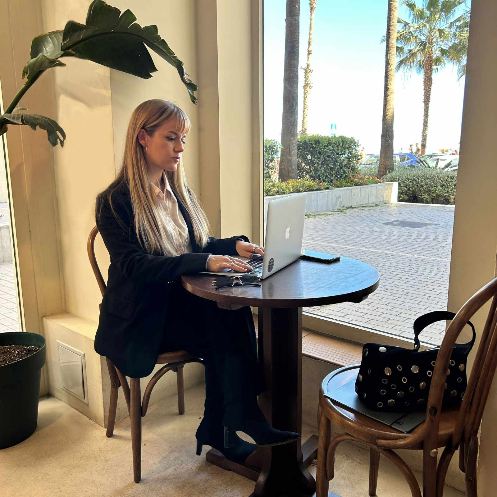

Hi, I'm María José!
From hospitality service to IT support — people first, always.
With over 12 years building client relationships in hospitality, I transitioned into the tech industry through a Full Stack Web Development Bootcamp and hands-on experience in SaaS environments. I combine technical knowledge with a genuine passion for helping people solve problems — clearly, patiently, and efficiently.
Tools & Skills
What I bring to a support team...
People-first mindset
12+ years in hospitality taught me to stay calm under pressure, communicate clearly, and always put the person before the problem.
Technical fluency
Graduated from a Full Stack Web Dev Bootcamp. I can read code, understand APIs and SaaS architecture, and communicate confidently with dev teams.
Bilingual EN / ES
Fluent English and Spanish, with international experience across the UK, Spain and LATAM. Ready to support diverse customer bases.
Fast learner, detail-oriented
From PMS systems in hotels to CRMs and SaaS platforms in tech startups — I adapt quickly, document well, and flag issues before they escalate.
About Me

My path into tech support...
Based in Málaga, with a background in Tourism and hospitality management, my entry point into tech came through Paraty Tech — a hotel SaaS company. Working as an SDR, I became the bridge between technical teams and hotel clients, troubleshooting digital needs and translating complex concepts into plain language.
Why customer support IT?
After completing my Full Stack Web Development Bootcamp at Adalab, I realized what I love most is not just building things — it's helping people use them. I want to be the person who turns a frustrated user into a confident one, using both my technical skills and my natural empathy.
Experience & Certifications
IFCT0078 – Web Creation, Development & Design. Junta de Andalucía / Grupo Alce
Currently studying. HTML, CSS, JavaScript and WordPress-based design tools.
Full Stack Web Developer Bootcamp – Adalab Tech School
Intensive training in HTML, CSS, JavaScript, React and Node.js. Collaborative agile teams, real-world projects, and client-facing demos.
View CertificateSales Development Representative – Paraty Tech (Hotel SaaS)
First contact for hotel clients across Spain and LATAM. Identified digital pain points, collaborated with technical teams to resolve them, and explained platform capabilities to non-technical users.
Hospitality Professional – Reception & Reservations
Hilton, Sheraton, Marriott, El Palace. Managed high-volume client requests, multi-system reservations software, and cross-department coordination. Exceptional communication in English, Spanish and French.
Degree in Tourism – Universidad de Jaén (Spain)
Tourism management, hospitality operations and international customer service.

Let's connect!
I'm open to IT Customer Support and Technical Support roles in Spain and abroad. I'd love to bring my blend of people skills and technical knowledge to your team.